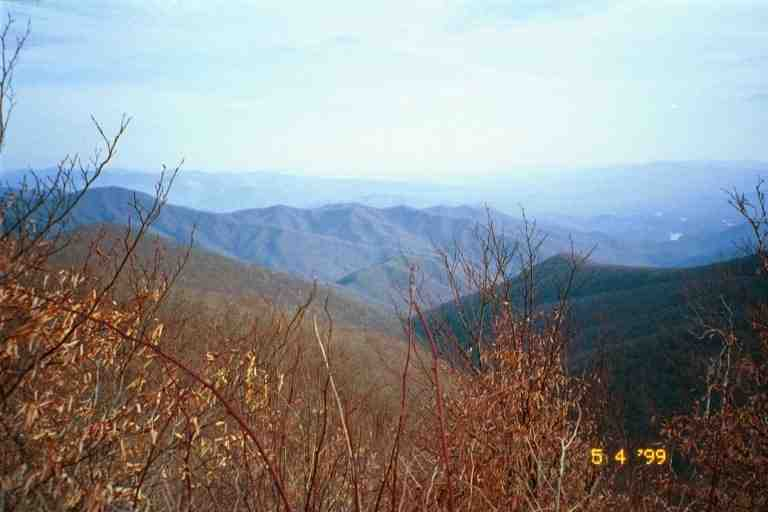

We started out late in the morning on Saturday April 3rd. We crossed Fontana Dam and entered the Great Smoky Mountains National Park. It was Easter weekend and we wondered what kinds of crowds we would encounter in this popular hiker destination at this busy time. We planned on doing a short day of just over 5 miles to Birch Spring Shelter. As we climbed, we got good views of Fontana Lake which was created by the dam. The trail was on the south side of the mountain and it was getting warm.
We were passed by a woman in shorts and halter top running up the mountain. Not long after, we found her waiting for us and she asked how far it was to Shuckstack. When we told her it was 4 miles and 2000 feet above the dam, she decided to turn around and go back. When we arrived at the side trail to Shuckstack we stopped and had a break. It was nice to be hot for once. We did not go up to Shuckstack which has an observation tower built to get a view of the surrounding area. The hikers who climbed it said it was spectacular. We had so many great views during our trip that we often did not bother taking side trails that lead to more views. It might have been a mistake in some instances.
TIN MAN came by while we were stopped. He had still been having problems with his feet and footwear. He had again found a new way to tie his boots. I am not sure if he was still carrying an extra pair of boots in his pack, as he was when he left Rainbow Springs Campground. This would be the last time we would see him. We have no idea how he made out.
We finally came to Birch Spring Shelter which was a short distance off the trail down in a little ravine. It was a dark, dirty and humid little shelter. There were a number of reasons we got this impression. Like most shelters in the Smokies it had stone walls and a chain link fence across the front to keep the bears out. When we went through the gate into the shelter, there was a dirt floor at the front and a sleeping area at the back. There were a few tarps hanging across the front on the fence, likely put there by hikers to stop the wind and snow during the snow storm. (I have attached a picture of Russell Field Shelter taken from BY THE NUMBER's journal at trailjournals.com. That shelter, however, is much nicer)
The sleeping area consisted of two shelves running along the entire length of the back wall. The lower shelf was about 18 inches off the ground and the second one was about four feet above it. They were about 7 feet deep and you slept facing the front with your feet at the back wall. It would not be wise to sleep facing the other direction because it was dark against the back wall and mice tended to run back there. Also the roof sloped down at the back, making it dangerous for those on the top one.
Hanging from the ceiling over the floor area were a number of mouse hooks. They are meant to protect food from mice. These consist of a cord tied to the ceiling beams and hanging to about 5 feet above the floor. An empty tin can with a hole punched in the bottom is threaded upside down half way up the cord. A small 6 inch piece of wood is attached at the bottom of the cord The theory behind the functioning is as follows: The cords of the hikers food bags are looped over the pieces of wood and the bags are suspended far above the floor. When mice come down the cord from the ceiling, the inverted tin can blocks their passage. Mice hooks are found in most trails shelters but the biggest problems seem to be in the Smokies. The mice hooks work pretty well but, in the Smokies, there are mice who walk down to the cans and then dive bomb the hanging bags trying to catch hold. When they miss, they simply go back up and try again. When they do catch hold, they nibble their way into the bag. Their success often comes because of the number of food bags hanging from each hook making a wide target.
-------------------------
We had very little mice problems during our trip. But we heard of the problems of ARCTIC SVEN in the park and we then read the same story in his journal at trailplace.com. SVEN started in February and suffered all kinds of problems including severe blisters to his feet and frostbite and sunburn to his face. As a result he applied much medication and ointments to his body. Here is his mouse story:
"The "fun" that we had with the mice turned wicked last night. One little rodent bit me, on 4 occasions, on my upper lip while I slept. It hurt and woke me up each time. The guy in the bunk above me got bitten half a dozen times as well. I think the Bullfrog sunscreen with aloe and other fragrances might have attracted it to my face. It also climbed in the sleeping bag with the guy in the top bunk.. At 5:05 AM I declared the rodent obviously deceased and stopped any sort of resuscitation attempts. It apparently bit me on the lip and received a pummelling inside my bag. It climbed into the bag with me and hid by my neck. I punched it about 5 times. Its little beak like nose was bloody and the corpse just laid there. I took some tissue and flung it onto the floor. Then I wiped up the bloodstain from my sleeping bag pillow. I an going to buy a couple of rat traps at the next grocery store and kill every rodent I can from here to Maine. I won't use poison...yet. Rodents = 4, Sven = 1."
SVEN made it all the way to Maine.
------------------------------------
We were the first to arrive at the shelter so MA immediately set up our sleeping area. I went over to check out the spring just twenty feet to the right of the shelter. The area was a gently sloping hill with few rocks and trees. The spring came out of the ground into a foot wide shallow pool at the edge of which someone had placed a stone in such a manner that some of the water ran out of the pool over the stone and made a tiny waterfall a few inches high. This would make it easy to catch the water in a pan for boiling for meals.
The water then spread out over the muddy ground as it ran down the hill. I followed the water down the hill trying to find a pool that would be deep enough to filter from and which would not contain too much sediment to clog up my filter's cartridge. The input tube on the filter has an acorn shaped pre-filter on the end that goes in the water. A depth of at least 2 inches works best as it completely covers the acorn. Far down the slope, I came to a damp grassy area with many fallen trees. It was a very difficult place in which to manoeuvre and the little pools were in area of tangled broken limbs making access almost impossible.
Back at the shelter, we were soon joined by a group of hikers (PHINN, SONGBIRD, RAINDANCER and M&M) that we would be seeing for the next month or so. PHINN and SONGBIRD were two young girls in their early twenties who had grown up together in Maine. PHINN now lived with her boyfriend in South Carolina. RAINDANCER was from Texas and was 29 years old. M&M was a young man in his late twenties, from New York who had been hiking with RAINDANCER for some time.
In her journal at http://trailplace.com/c99journals/312reese/312reese_index.html, RAINDANCER mentions meeting us and tells how she gave us her mother's famous recipe for biscuits and gravy, when I told her how much I loved that southern staple. My recollection is likely not the same as hers. Here is how I remember the recipe:
Break up and fry some Jimmy Dean sausages. When well done, strain out the pieces of meat. Leave a little of the fat in the pan and add some flour and heat. After some time, slowly add milk to make a white gravy, stir a lot and don't add too fast. Then add the meat back to the gravy. When I asked about the light fluffy biscuits, she told me her mom used pillsbury biscuits.
After a large filling meal, M&M and I walked over to the spring. We found a few rocks which we used to dam part of the waterflow to form a little pool. We wanted it deep enough for the sediment to settle and have clearer water near the surface. Conditions were such that we could not make a pool deeper than a few inches. I wrapped my clean bandanna over the acorn, hoping that it would stop the sediment from getting in the filter. I then pumped water for our needs.
The next day was sunny and hot. There were many ups and downs but the footing was good and the walking was easy. We were starting to get our hiking legs. As with most of the Smokies, the trail followed the ridgeline, dipping gently into gaps and then rising slowly to the peaks. The border between Tennessee and North Carolina went along the ridgeline so we usually could see one state or the other down below us as we walked. Some times the ridgeline was very narrow and we could see below us on both sides. Because this was a wilderness area, we saw no signs of civilization as we looked out in the distance. Instead we saw gently sloping hills and chains of round mountains off in the distance parallel to our path.
We passed two shelters before coming to our destination, Spence Field Shelter. The gang from the previous night were here as was SERPICO and a number of weekend hikers and a Ridgerunner named Chas. The ridgerunners patrol the trail, including the park, looking for problems with the trail and facilities, and helping hikers if they can.
A section hiker arrived without a reservation and without a tent. Chas informed him that he could not guarantee him a spot in the shelter and that he could therefore find himself in a tough spot without a tent. The situation surrounding reservations and shelter space is as follows. Section hikers are required to have a reservation. The park always leaves three spots available for thru hikers, because their itineraries prevent them from making reservations. If all the reserved spots are full, and more than three thru hikers show up, the late arrivals, must tent. In effect, the thru hikers are the only people allowed to tent in the park, but they must do so near the shelters. If individuals happen to show up without reservations, the thru hikers have priority for the space in the shelter. The reservation system is to ensure this popular park is not abused.
In this case there was space available, but Chas was not sure if a late thru hiker would arrive to take it. The hiker decided to leave and take a side trail down to a camp ground. If Chas had not been there, I am sure we could have accommodated the hiker. I met the hiker a few days later, and he had no ill feelings, saying that Chas had been very polite and had been doing his job in enforcing the rules. He blamed himself for the problem.
A group of four section hikers started a fire in the pit and then placed big thick steaks on the grill over the fire. They then cooked some side dishes on their stoves. Well, they had overestimated their appetites and had two large steaks left over which they offered to the starving drooling thru hikers. We cut it up between six of us and ate it with our hands. It was so good.
SONGBIRD was the seventh thru hiker but she is vegetarian, in fact she is a vegan (eats no eggs or milk products). The attached photo shows six of the group after the steak feast. From left to right are PHINN, MA, PA, RAINDANCER, M&M and SONGBIRD.
The next day was sunny and hot with temperatures in the 70's. We started walking along the ridgeline and then the trail came out into the open and we started climbing Rocky Top, where we stopped to take in the view. The only vegetation was shrubs, bushes and long grasses. We had a great view of the surrounding mountains and the next few peaks. We could see other hikers walking the exposed ridgelines ahead. We then came to Thunderhead mountain which was even higher and gave similar views.
Later we walked through long corridors of rhododendrons. These bushes had been on our path since the start of our trip and a few times we had taken refuge from the rain under the thick waxy leaves which do not drop in winter. In the smokies there are sections of the trail that are lined with the thick bushes, blocking our view in all directions. They would no doubt be spectacular when they flowered in June.
Around supper time we came to Silers Bald Shelter (yes, the second shelter with this name). Here we met GREENFOOT, a gentleman in his early sixties and two other hikers of about the same age. We cooked supper and talked with RAINDANCER who was going on to Double Springs shelter, nearly two miles further. We were tempted to stay at this shelter as there would likely only be five people, but in the end we packed up our stuff and headed out, aiming for the next shelter where our friends would be staying. The attached picture was taken on the way to the shelter.

An hour later we arrived at Double Spring Shelter. It was a zoo. There had to be more than 40 people here. The shelter was full of noisy weekend hikers. CHRISTOPHER ROBBINS and CANEBREAK were the only thru hikers who dared sleep in the shelter. They apparently regretted it as some kids talked all night keeping them awake.
We set up our tent in a nice grassy area not far from the shelter. I had a heated discussion with CANEBREAK who was washing his dishes in the spring that was the only water source. CHRISTOPHER ROBBINS said he found a young boy washing his socks there. RAINDANCER and the gang said they were going to get up early and hike 3 miles in the dark to Clingman's Dome to see the sunrise. Clingman's Dome is the highest place on the trail, and has a large tower on top providing a view of the entire park.
We woke up at daybreak to a foggy, drizzly, cool day. The gang had gone but it was certain they would not have seen the sunrise today. We ate and packed quickly trying to keep our stuff dry and took off down the trail. We were aiming to do 14 miles today, crossing US 441 at Newfound Gap and continuing on to Icewater Spring Shelter. This would put us in line for finishing the whole 70 miles of the park two days later, without a town stop.
This was going to be one uncomfortable day. Almost immediately we came to trees blown down across the trail. We had come across many blowdowns in the trip and we managed to either crouch under them or go around them or straddle them to go over. Here it was different. Most of the downed trees were large and had many branches. This made it very difficult to go over or under them without risking injury. This was an area of thick woods making it almost impossible to go around. To make matters worse, the trail was in soft ground and had been worn down to a trench by the heavy traffic. Water had collected in this trench, making the trail muddy.
Our progress was slow. We had to help each other over the blowdowns and sometimes had to take off our packs in order to climb over them or crawl under them in the mud.. During this time the cold rain was falling and the wind was blowing. After a mile or so, we came out of the woods on to the open ridge line. We were cold and wet but dared not stop because we were in the open and exposed to the cold wind and rain.
We continued on, climbing 1000 feet in the process until we came to Clingman's Dome. The tower on top of the mountain is made of stone and has a circular pedestrian ramp winding its way to the top. We did not go up because there would be no view in this weather and it was exposed . We were exhausted and cold and damp and depressed. We huddled behind the lower section of the ramp and ate some candy bars. We met a few tourists who had driven here and we met CANEBREAK who apologized for our encounter the previous night. We eventually put on our packs and headed down the trail.
From Clingman's Dome the trail started immediately to descend down the northern side of the mountain. We were away from the wind on this side and our efforts warmed us up. The descent was a little steep and there were many two foot drops where we hung on to branches. Our hiking poles were very useful. As we came down, we saw patches of snow in the woods, remnants of the snowstorm that battered these mountains the preceding week. When the trail finally levelled out, we often found ourselves walking in a couple of inches of water. Here again the trail was a trench and had collected water from the rain and the run off. It was difficult to find a dry spot to walk and even more difficult to find a place to sit and have a break. We eventually took a break on two tree stumps and met a father and family from Michigan who were day hiking up to the Dome.
The trail started to descend again through muddy slippery terrain. On the right we would often get glimpses of cars on the road to Clingman's Dome. We were passed by XENA who was hiking topless, and shortly after by his father JED. They had spent the night at Mount Collins shelter on this side of the Dome, but a half mile off the trail. JED said that he was getting off the trail at Gatlinburg, sooner than he had planned. It seemed that there was friction between him and his son. Seeing XENA topless made me realize that I usually tended to overdress and likely had a fear of being too cold and of hypothermia.
We finally came into a clearing at Indian Gap where there was a parking lot on the road up to Clingman's Dome. Here we passed a young couple named BROOKS and LAUREL whose real names were Wes and Kristen. They said they had started on March 1 and were taking their time. I will introduce them more fully in another instalment.
In the middle of the afternoon we came to Newfound Gap and US 441. This is the only road crossing along the trail in the Smokies. As you come to the road, you notice that there is a large parking lot with a look off, a monument and a washroom. To the east, the road leads down the mountain out of the park 18 miles to Cherokee NC. To the west it leads down the other side 16 miles to Gatlinburgh TN.
Today's hike had drained us. We were wet and sweaty. Our boots and our pants were soaked and muddy. MA said that she really needed a town break. We decided to clean up and see if we could catch a ride to Gatlinburgh. We took off our boots and socks and put on dry socks and our sandals. We then rinsed the mud off our boots and took our turn washing up in the washroom.
We walked down to where the parking lot rejoined the road. It was 4 o'clock and we decided to try to hitch for about a half hour before re-evaluating our decision. A woman and her excited kids walked down towards us to talk to two real thru hikers. Unfortunately there was five of them and they would have no room in their car. I looked back up the road and saw BROOKS and LAUREL entertaining two ladies in the same fashion. The ladies were taking their picture.
We were having no luck getting a ride. It was a touristy crowd with fancy and /or full cars. I do not think I would have picked us up either. Finally a fancy travel van pulled over and offered us a lift. It was the two ladies who had been talking to BROOKS and LAUREL. We felt a little reluctant getting in this beautiful vehicle. We placed our dirty boots and one pack in the back and then we got in the side door with the other pack. The van had 4 captain chairs and was fully carpeted, floor and walls. They were tourists and all they wanted is that we entertain them with stories about our hike as they drove us down the mountain.
They were not too familiar with Gatlinburgh so they ended up driving us through most of the town and then stopped at a number of motels for me to check the rates. Finally we came to the Stony Creek Motel where the rooms were $29 and included a fridge and microwave and HBO. We did not get the names of these trail angels, but by coincidence we got their names a few months later, and we mailed them a picture of us at Christmas.
We draped our wet tent over chairs in the parking lot and dried our boots in the sun. We ordered in pizza the first night and relaxed. The place was so good that we decided to stay an extra day. The owners and staff at the motel were wonderful. For a small fee the laundry girl (Teara-Lynn) did our laundry and even folded it. Sandy, the owner, provided us with a box to mail some extra items home and then drove us to the Post Office which was a few miles away. We mailed 4 pounds home, including our long pants and our binoculars. She then drove us downtown.
We walked along the main street of this little tourist town, feeling out of place with all the shops selling tourist trinkets for which we would have no use. I weighed myself at a pay scale and found that I had dropped 18 pounds to 184 pounds. We went to Shoneys for all you can eat breakfast where I filled up on fatty foods including a good helping of biscuits and gravy. We bought a few supplies and then went and waited for the trolley to bring us back to the motel. While waiting, we met XENA and had a nice conversation. This was the last time we would see him. We took the 25 cent tourist trolley back to the motel where MA waterproofed our boots, I made frozen meals in the microwave, and we vegetated in front of the TV.
The next day, Teara-lynn's husband drove us back up to Newfound Gap (for a fee in a truck that did not seem able to climb the mountain) and we were on our way.